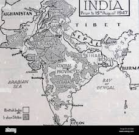

What If India Never Partitioned?
Explore a structured alternate-history simulation of politics, economy, society, and strategic influence in an undivided South Asian federation.
Start SimulationHistory Module
Context behind the 1947 partition and the counterfactual baseline for this simulation.
The partition of India in 1947 followed decades of colonial pressure, communal tensions, and political disagreements among major leadership blocs. In this project, we model an alternative where partition is avoided through a power-sharing federal settlement.
Under this scenario, regions such as Punjab, Bengal, Sindh, and the princely states are integrated into a single constitutional framework. The central question is not whether conflict disappears, but whether conflict is managed institutionally rather than through territorial division.
This allows us to examine possible long-term effects on state capacity, development spending, social cohesion, and geopolitical leverage while also acknowledging ongoing internal risks from linguistic, regional, and class tensions.
In this alternate timeline where India never partitioned in 1947, the subcontinent emerged as one vast, federal Dominion of India — a single sovereign nation stretching unbroken from the Khyber Pass to the Burmese frontier and from the Himalayas to the Indian Ocean, home to nearly 400 million people on Independence Day and over 1.8 billion today. The Constituent Assembly, guided by Nehru, Patel, and Jinnah (who accepted the role of permanent Vice-President with special safeguards for Muslim-majority provinces), framed a robust federal constitution that granted sweeping autonomy to Punjab, Sindh, NWFP, and East Bengal while preserving a strong but balanced centre in Delhi. No Radcliffe Line was ever drawn; instead, joint Congress–Muslim League peace committees swiftly contained the 1947 riots, princely states integrated peacefully through negotiation, and the undivided military and civil services maintained order without the trauma of mass migration or communal genocide. From 1947 to 1960, a unified Five-Year Plan fused the Indus and Ganges basins into the world’s largest contiguous irrigated zone, launched the Green Revolution a decade early, and poured resources saved from future wars into heavy industry and nationwide literacy drives. The 1960s saw this stronger India repel China’s Himalayan incursions more decisively, avoid the 1965 war entirely, and reorganise linguistic provinces on a grand federal scale while a single national cricket team and merged film industry forged a shared cultural identity. In the 1970s–1980s, East Bengal’s autonomy demands were resolved through constitutional restructuring rather than secession, the oil shocks were cushioned by diversified internal resources, and nuclear and space programmes advanced faster without a rival arms race; Indira-era reforms focused on nationwide land redistribution across a seamless market. By 1990 onward, liberalisation detonated across the entire subcontinent, creating an integrated economy with seamless supply chains from Karachi ports to Kolkata factories, a unified tech corridor from Lahore to Bangalore, and foreign investment flooding into the planet’s largest single consumer market. Today this undivided India stands as a vibrant, fractious superpower — richer, more secure, and more influential than our divided reality — with a permanent UN Security Council seat, unmatched soft power through cricket and cinema, and decisive sway over Afghanistan and the Indian Ocean, yet forever managing its immense diversity through sophisticated federal balancing acts. The scars of 1947 were avoided; the promise of 1947 was fulfilled.
Timeline Module
A simplified alternate trajectory from independence to globalization.
- 1947: Independence without partition. Princely states and provinces integrate under a federal constitutional settlement.In 1947, independence would have been declared for a single, undivided Dominion of India stretching from the Hindu Kush to Burma’s border, with a carefully negotiated federal constitution already signed by Nehru, Patel, Jinnah (who would likely have accepted the role of powerful Vice-President or Leader of the Opposition with special safeguards for Muslim-majority provinces), and the British. No Radcliffe Line would exist, no overnight border chaos, and no mass refugee trains. The horrific communal massacres that killed up to a million people in our timeline would be replaced by coordinated Congress–Muslim League peace committees and joint police-military action that quickly contained riots in Punjab and Bengal. Princely states like Kashmir, Hyderabad, Junagadh, and the western frontier would integrate peacefully through diplomacy and incentives rather than military force. The initial euphoria of freedom would be real, but immediately tested by the need to form a grand coalition government in Delhi to manage the transition, setting a precedent for multi-community rule that would define the new nation’s politics for decades.
- 1947-1960: National planning scales faster due to unified rail, river, and port systems with fewer trade disruptions.From 1947 to 1960, all the energy and resources wasted in our history on three Indo-Pak wars would instead pour into nation-building on a colossal scale. A single unified Five-Year Plan would integrate the Indus basin’s irrigation networks, Punjab’s cotton fields, East Bengal’s jute economy, and the Deccan’s minerals into one seamless internal market. The Green Revolution would arrive a decade earlier through cooperative farming across undivided provinces, dramatically boosting food production. The Constitution would grant substantial autonomy to Muslim-majority regions (Punjab, Sindh, NWFP, East Bengal) with special provincial rights and gradual phasing out of separate electorates, preventing the fear of Hindu domination. A larger, undivided military (including intact Muslim regiments) would maintain internal peace, while Nehru’s central planning would drive heavy industry and literacy campaigns. Kashmir would remain calm as an integrated state, and sporadic communal tensions would be handled by federal forces rather than escalating into war. Overall, per-capita growth would be noticeably higher than the real-world 1950s stagnation, laying a far stronger foundation for the young republic.
- 1960s: Lower interstate military pressure allows heavier investment in irrigation, education, and industrial capacity.In the 1960s, this united India—economically and militarily far stronger—would decisively repel China’s 1962 Himalayan incursions with fully integrated western and eastern frontier forces, avoiding the humiliating defeat of our timeline. There would be no 1965 war because no separate Pakistan would exist to launch it. Linguistic state reorganizations would occur on a grander scale, creating powerful Bengali and Punjabi sub-states with significant veto powers while still keeping the centre strong. Industrialisation would accelerate rapidly, making India Asia’s second-fastest growing major economy after Japan. Culturally, a single national cricket team would dominate world cricket earlier, and Bollywood would seamlessly incorporate talent from Lahore, Karachi, and Dhaka, creating a unified golden age of Indian cinema. Foreign policy would be more assertive and confidently non-aligned, with greater leverage in the Cold War and no early nuclear arms race draining resources.
- 1970-1980: Integrated coastline and inland logistics support accelerated manufacturing and wider internal market expansion.During the 1970s and 1980s, the absence of the 1971 Bangladesh Liberation War and its massive refugee crisis would save millions of lives and billions in costs. East Bengal’s autonomy demands would still create political tension, but these would likely be resolved through prolonged negotiations and a managed federal restructuring rather than full secession. Indira Gandhi’s (or a successor’s) Emergency-era reforms would focus on nationwide land redistribution and poverty alleviation across a vast single market. The 1970s oil shocks would hurt less due to diversified internal resources. Nuclear and space programmes would advance faster without a rival neighbour’s proliferation fears. Soviet relations would remain close but with more bargaining power. However, Hindu–Muslim political friction would persist, leading to frequent coalition governments in Delhi, occasional localised violence, and stronger provincial identities in Punjab, Sindh, and Bengal. Majoritarianism and extreme Islamisation (as seen in real-world Pakistan) would be avoided, replaced instead by constant federal balancing acts.
- 1990 onward: Liberalization across one large market boosts global competitiveness, services growth, and soft-power reach.From 1990 onwards, economic liberalisation would explode earlier and far more powerfully under a Rajiv Gandhi-like reformer or an even earlier leader, unleashing a single, unified economy that could reach 3–4 trillion dollars (PPP) by the 2010s—potentially rivaling or surpassing China. Seamless supply chains would run from Karachi ports to Kolkata factories, a unified tech boom would connect Bangalore, Hyderabad, and Lahore, and foreign investment would flood into the world’s largest single consumer market. With no nuclear arms race or border militarisation, massive resources would flow into infrastructure, education, and healthcare instead. India would likely secure a permanent UN Security Council seat by the early 2000s. Global soft power would be unmatched—through a dominant pan-subcontinental cricket league, a shared cinematic universe, and decisive influence in Afghanistan (no Taliban-Pakistan nexus as we know it). Yet internal challenges would remain: Hindu nationalist surges would be met by Muslim provincial pushback, occasionally leading to Canadian-style referendums in Punjab or Bengal; low-level insurgencies in the northeast or Baloch areas would still flare up; and coalition governments in Delhi would often slow decisive reforms. The result would be a vibrant, fractious, incredibly rich superpower—far more influential globally, far less militarised on its western borders, and forever walking the tightrope of religious and regional pluralism that partition was meant to solve but only postponed.
Simulation Overview
Key structural indicators of a unified South Asian federation.
Population Scale
~1.8 Billion citizens in a single federal system.
Strategic Geography
Unified control from the Arabian Sea to the Bay of Bengal.
Economic Integration
Karachi–Delhi–Kolkata corridor powering continental trade.
Global Influence
Projected permanent seat in global governance institutions.
Scenario Simulation Module
Click any scenario to view outcomes and potential trade-offs.
Political Unity
A broader federal compact may reduce border conflict while increasing the need for strong coalition governance and constitutional safeguards.In a world without Partition, a single India would have adopted a far broader and more resilient federal compact from 1947 itself, with the Constituent Assembly enshrining sweeping autonomy for Muslim-majority provinces (Punjab, Sindh, NWFP, East Bengal) while keeping a strong but non-dominating centre in Delhi. Jinnah would likely have served as the first Vice-President or Leader of the Opposition with veto rights on cultural and religious matters, turning potential rivalry into permanent coalition governance. No Radcliffe Line would ever be drawn, eliminating the very concept of an Indo-Pak border and with it four wars, three nuclear crises, and endless military standoffs. Kashmir would remain a peaceful integrated state rather than a perpetual flashpoint. Princely states would merge smoothly under one negotiated framework instead of military operations. The result would be a continuously evolving federal democracy where regional identities (Punjabi, Bengali, Sindhi, Pashtun) are celebrated through powerful provincial assemblies, yet national unity is preserved by a larger, undivided military and joint civil services. Hindu-Muslim political competition would still exist but would play out inside Parliament rather than across battlefields, producing more stable coalition governments, fewer emergencies, and a political culture closer to Canada or the European Union than the adversarial India-Pakistan reality we know.
Economic Growth
Combined resource corridors, ports, and labor markets could increase scale, productivity, and trade continuity over decades. Without Partition, India would have inherited the entire subcontinent’s resource base as one seamless economy, creating the world’s largest single market from the very first day of independence. Karachi’s world-class port would serve as the western gateway, seamlessly linked by unbroken rail and road corridors to Mumbai, Kolkata, and Chittagong, while the combined Indus-Ganges-Brahmaputra river systems would feed the biggest contiguous irrigated farmland on Earth. Punjab’s cotton, East Bengal’s jute, Sindh’s natural gas, Odisha’s minerals, and Maharashtra’s industries would feed into unified supply chains without any customs barriers, tariffs, or hostile borders. The Green Revolution would have spread across undivided provinces a decade earlier, and the 1991 liberalisation would have detonated on a vastly larger scale—turning the subcontinent into an economic superpower potentially matching or surpassing China by the 2010s. A single massive labour pool of 1.7–2 billion people, shared technical talent from Lahore to Bangalore, and one set of regulations would have attracted trillions in foreign investment. Today this united India would boast seamless industrial corridors from the Arabian Sea to the Bay of Bengal, a unified energy grid, and an economy that is richer, more diversified, and far less vulnerable to external shocks than our divided present.
Social Harmony
Avoiding mass displacement may deepen intercommunity exchange, though identity management remains essential in a large federation. Avoiding the mass displacement of 15–18 million people and the slaughter of up to a million in 1947 would have fundamentally altered the social fabric of the subcontinent. Families would never have been torn apart; millions of Hindus, Muslims, and Sikhs would have remained in the towns and villages where their ancestors lived for centuries. Shared schools, colleges, festivals, and marriages would have continued uninterrupted, gradually eroding the sharp religious polarisation that Partition hardened into national identities. A single national narrative would celebrate the freedom struggle as a joint Hindu-Muslim-Sikh triumph rather than two competing origin stories. Linguistic and provincial identities (Bengali, Punjabi, Sindhi) would flourish within a federal framework instead of being weaponised against each other across borders. Communal riots would still occur but would be contained locally by joint police and community leaders rather than escalating into national trauma or state-sponsored propaganda. Over decades, a deeper inter-community trust would have developed—visible today in mixed neighbourhoods across Karachi to Kolkata, shared cinematic and sporting cultures, and a generation that identifies first as “Indian” and only second by faith. While religious and regional tensions would persist, they would be managed through democratic negotiation rather than militarised hatred, producing a more pluralistic, culturally vibrant, and socially cohesive society than the scarred and suspicious nations that emerged from 1947.
Impacts Module
Three impact domains are evaluated side by side.
Political Impact
A unified state could develop stronger federal institutions, improved strategic depth, and more continuity in long-term public policy, if power-sharing remains credible.In a unified India that never experienced Partition, a single sovereign state would have developed far stronger and more mature federal institutions from the very outset of independence in 1947. With the entire subcontinent under one Constitution, the Constituent Assembly would have crafted deeper power-sharing mechanisms—giving Muslim-majority provinces (Punjab, Sindh, NWFP, East Bengal) robust autonomy, veto rights on cultural-religious issues, and guaranteed representation in the central cabinet—turning potential separatism into permanent coalition politics. Jinnah or a similar Muslim League leader would likely have held high office continuously, ensuring policy continuity across decades rather than the sharp breaks caused by rivalry between two hostile nations. Strategically, the unified country would enjoy unmatched geographic depth: a single military controlling the entire Himalayan frontier, the Indus and Ganges plains, and the eastern seaboard, allowing decisive responses to external threats like the 1962 Chinese incursion without divided resources or intelligence failures. Long-term policy continuity would replace the stop-start cycles of India-Pakistan hostility; five-year plans, nuclear doctrine, and foreign policy would evolve with institutional memory instead of being reset by wars and regime changes, producing a more stable democracy with fewer emergencies, stronger civil services, and a political culture where national interest consistently overrides communal or provincial populism.
Economic Impact
A single market with integrated agricultural belts, ports, and energy routes may improve capital formation and reduce duplication in defense-led spending.A single, undivided Indian market from 1947 would have created the largest integrated economy on Earth, fusing agricultural belts, ports, and energy routes into one seamless system that dramatically improves capital formation and slashes duplication. The fertile Indus basin in the west, the Ganges heartland, and the Brahmaputra delta in the east would operate as a single food bowl without any trade barriers, allowing the Green Revolution to spread nationwide a decade earlier and generating massive agricultural surpluses for reinvestment. Karachi, Mumbai, Kolkata, and Chittagong ports would function as complementary hubs under one customs regime, enabling efficient export corridors from cotton fields in Punjab to jute mills in Bengal and mineral mines in central India. Energy pipelines and power grids would criss-cross the subcontinent without rivalrous competition, pooling natural gas from Sindh, coal from Bihar, and hydroelectricity from the Himalayas into a unified national grid that lowers costs and attracts trillions in foreign direct investment. Duplication of defence spending, separate currencies, and duplicated infrastructure would vanish, freeing hundreds of billions of dollars over decades for roads, railways, and education. By the 2010s this unified economy would likely be 40–60 % larger than the combined GDP of today’s India, Pakistan, and Bangladesh, with higher per-capita incomes, a deeper industrial base, and the scale to rival China as the workshop of the world.
Social Impact
Lower forced migration could preserve social networks and cultural hybridity, but governance would still need to manage diverse linguistic and regional demands.By preventing the forced migration of 15–18 million people and the communal bloodbath of 1947, a united India would have preserved centuries-old social networks and cultural hybridity that Partition shattered forever. Hindu, Muslim, and Sikh families would have continued living side-by-side in Lahore, Amritsar, Dhaka, and Kolkata, maintaining shared neighbourhoods, inter-faith marriages, joint businesses, and syncretic traditions such as Sufi-Bhakti festivals and composite folk cultures. Schools and colleges would have remained mixed, producing generations fluent in each other’s languages, cuisines, and customs, while a single national media and film industry would reinforce a shared “Indian” identity rather than competing nationalist narratives. Lower forced migration would mean intact kinship systems, preserved ancestral lands, and far less generational trauma, leading to stronger community trust and reduced polarisation. However, governance would still face the complex task of managing deep religious and linguistic diversity: federal and provincial laws would need constant calibration to balance majority and minority rights, prevent localised riots, and accommodate provincial identities through affirmative action, cultural commissions, and power-sharing formulas. The result would be a more organically pluralistic society—richer in hybrid art, music, literature, and everyday coexistence—yet one that requires vigilant, sophisticated federal management to ensure harmony does not slide into majoritarian dominance or regional fragmentation.
Map Module
Visual concept of a unified subcontinental federation.

Conclusion Module
This alternate-history model suggests that an undivided India may have achieved earlier scale advantages in governance, trade, and strategic influence, while still facing serious internal coordination challenges.**Conclusion** This alternate-history model reveals that an undivided India, forged in 1947 as a single sovereign federation spanning the entire subcontinent, would have emerged not merely as a larger version of today’s nations but as a fundamentally transformed civilisation-state — one that avoided the catastrophic human and economic costs of Partition while harnessing the full synergy of its shared geography, resources, cultures, and people. Politically, the grand coalition of 1947 would have evolved into a robust, Canadian-style federalism where powerful provincial assemblies in Lahore, Dhaka, Karachi, and Chennai balanced a strong but non-hegemonic centre, producing decades of policy continuity, deeper democratic institutions, and strategic depth that turned potential rivals into permanent partners inside one Parliament rather than enemies across barbed wire. Economically, the seamless fusion of the Indus-to-Ganges agricultural heartland, the unified port network from Karachi to Chittagong, and a single 2-billion-person market would have accelerated industrialisation, triggered an earlier and more explosive liberalisation, and propelled the subcontinent past China to become the world’s largest economy by the 2030s, with trillions redirected from duplicated militaries and borders into world-class infrastructure, education, and innovation. Socially, the preservation of ancient mixed communities, unbroken family ties across Punjab and Bengal, and a shared national narrative would have nurtured a richer, more organic pluralism — where Sufi shrines and temple festivals continued side-by-side, cinema and cricket bound the region in one cultural universe, and generational trauma was replaced by everyday coexistence — even as wise federal governance managed inevitable religious and linguistic tensions through dialogue rather than division. In the end, the final takeaway is crystal clear: unity could have delivered a superpower that is not only vastly wealthier, more secure, and more influential on the global stage, but also more authentically reflective of the subcontinent’s ancient civilisational genius — a living proof that the greatest strength of this land has always lain in its ability to hold diversity within one embrace, rather than fracturing it into separate destinies. The scars of 1947 were not inevitable; they were a choice — and in this timeline, choosing unity would have written a far brighter chapter for one-sixth of humanity.